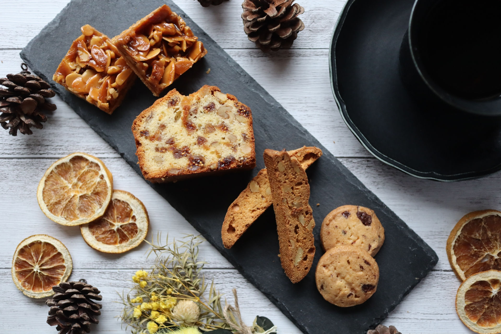

ABOUT
SAKI ITAYA
石川の能登奥でひっそりと小さなカフェを営んでいます。
石川の季節の素材で丁寧に、温かい気持ちを感じるお菓子を作っています。
その日の季節、気温、天気の状況に合わせてお菓子を作るため、日ごとにショーケースの表情が変わっていきます。ぜひ、変化をお楽しみください。
石川の能登奥でひっそりと小さなカフェを営んでいます。
石川の季節の素材で丁寧に、温かい気持ちを感じるお菓子を作っています。
その日の季節、気温、天気の状況に合わせてお菓子を作るため、日ごとにショーケースの表情が変わっていきます。ぜひ、変化をお楽しみください。